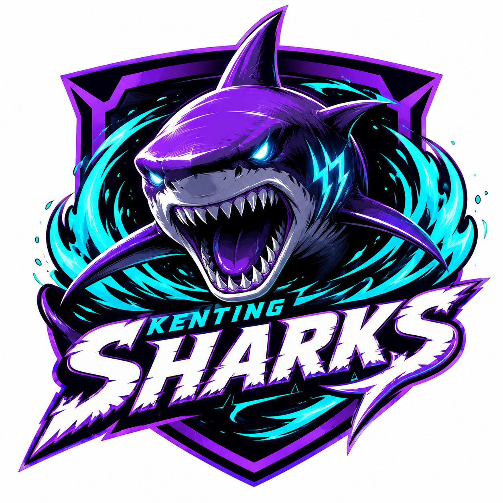
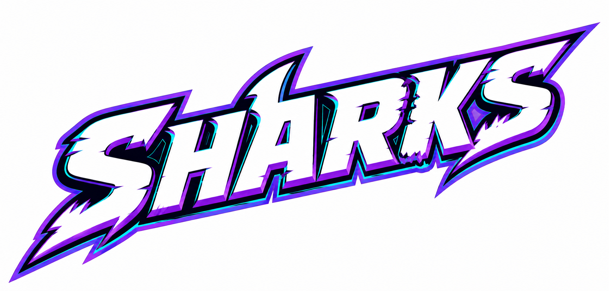

墾丁鯊魚（英文：Kenting Sharks）是一支台灣的職業棒球隊伍，所屬聯盟為室內棒球聯盟。 該隊的所屬城市為屏東縣，一軍主場則是位於該縣的墾丁大尖山海灣球場，該球場為全台唯一緊鄰沙灘、能吹著海風觀戰的半開放式現代化球場；而負責培養新秀的二軍農場基地以及二軍比賽主場，則是位於屏東麟洛的墾丁鯊魚春訓園區。 該隊創立於2023年，前身為企業化之前由屏東縣政府資助、創立於2010年的屏東鯊魚隊。目前球隊的營運與商業經營，則是由台灣頂級觀光巨頭海藍渡假村集團全權負責。
球隊歷史
2010年7月15日，室內棒球聯盟因應台灣民間「全民棒球運動普及計畫」的推動，宣布進行歷史上第一次球隊擴張，聯盟規模預計從原本的8隊大幅擴編至14隊。當時代表南台灣參賽的「屏東鯊魚隊」在此背景下正式掛牌成立。
創隊初期，球隊由屏東縣政府與在地中小企業聯合集資營運，主場設於舊屏東縣立棒球場。由於缺乏大型財團挹注，加上地理位置偏遠，早期在爭奪自由球員時屢屢受挫，加上自身帶進來的社會人業餘系統不好，使得前三個賽季皆以全聯盟墊底或倒數第二名作收。然而，2010年代中葉起，屏東鯊魚隊並打出極具侵略性的跑打戰術，逐漸擺脫魚腩球隊稱號，成為聯盟中不可忽視的「南台灣黑馬」。
2023年1月，室內棒球聯盟迎來全面企業化浪潮。屏東縣政府為尋求球隊永續經營，公開進行股權招標，最終由台灣頂級觀光旅宿巨頭「海藍渡假村集團」以獨資方式買下球隊全數股權。
海藍集團接手後，隨即召開高層改組會議，正式將球隊更名為「墾丁鯊魚隊」。時任球團董事長藍海天表示，保留「墾丁」前綴是為了深化國際觀光與屬地主義，讓棒球與南台灣的海洋度假文化結合。球團隨後斥資重金，將原本老舊的主場改建為全台首座半開放式的「大尖山海灣球場」，允許球迷在看台上遠眺沙灘與享受海風，成為聯盟中的票房與話題焦點。
硬體升級的同時，球團導入了當時全聯盟最具革命性的「智慧大數據球探系統」。這套系統不只盯著傳統科班大賽，更派員深入全台鄉鎮的社區聯賽與高中社團，成功挖掘出多位「寶藏球員」。2026年總冠軍，墾丁鯊魚隊奪得隊史首座年度總冠軍。2028年，室內棒球聯盟因應球隊擴增宣布改制為「兩聯盟制度」，墾丁鯊魚隊在改制首年大放異彩，不僅奪得南部聯盟常規賽分區冠軍，更在隨後的南部季後賽與台灣大賽中以直落四橫掃對手，笑納改制後的首座兩聯盟總冠軍。
2028年的大成功讓球團野心膨脹。2029年2月，墾丁鯊魚隊仿效美職模式，宣布在加勒比海棒球重鎮多明尼加正式成立「墾丁鯊魚海外棒球學校」，希望透過海外青訓系統挖掘低成本、高潛力的拉丁美洲新秀。
然而，該計畫很快遭遇嚴峻挑戰。由於美職體系在拉丁美洲的根基根深蒂固，頂尖或極具潛力的多明尼加年輕球員仍將美職視為唯一首選，鯊魚隊僅能簽下二三線的選手。加上跨國營運成本高昂、語言隔閡與文化適應不良，該多明尼加基地連續四年虧損，最終於2033年底由球團董事會正式宣布「無限期終止營運」。
儘管海外計畫受挫，鯊魚隊靠著國內強大的大數據球探基本盤，在聯盟賽場上依然保持強大競爭力，成為2030年代初期的季後賽常客。2034年，聯盟因考量對戰新鮮度，宣布廢除兩聯盟制，重新回歸「單一聯盟、多個分區」的賽制。2037年，回歸單一聯盟第四年，度過新老交替陣痛期的墾丁鯊魚隊捲土重來，再度捧起冠軍金杯；隔年更在主場滿場球迷見證下順利衛冕，達成隊史首次二連霸，這段時期也被老球迷稱為「狂鯊王朝」。
2038年衛冕成功後，球團高層對於主力陣容過於樂觀，未能及時進行實質性的新老交替。進入2040年代，隨著二連霸時期的功勳核心球員集體步入職業生涯末期、傷病頻傳，加上南區其他勁旅大舉引入科技化訓練，墾丁鯊魚隊的戰力出現雪崩式下滑。
在漫長的 150 場常規賽考驗下，板凳深度的不足被無限放大。自2042年至2051年的十年間，墾丁鯊魚隊在南區內竟然吞下了高達7次的分區墊底，季後賽勝率直接歸零，被外界戲稱為「送分大隊」。
面對戰績低迷，球團高層顯得缺乏耐性，陷入了「戰績差 ➔ 炒總教練 ➔ 戰術體系大洗牌 ➔ 戰績更差」的惡性循環。在這十年間，球隊匪夷所思地撤換了七任總教練。频繁的頻格動盪導致年輕球員養成方向混亂、陣中科班與社團出身球員出現戰術思維摩擦。截至2051年賽季結束，球隊士氣已跌落至隊史創立以來的最低谷。
2052年新賽季開季，墾丁鯊魚隊再度更換教練團，並宣示今年為「狂鯊覺醒」的重建元年，聘請新任總教練陸振浪，並與其簽下4年約，除了展現對新任教練團的耐心外，也試圖在強敵環伺的南區打破弱旅標籤，找回失落已久的南國榮耀。
標誌、制服和顏色
球隊徽章設計
2023年1月，隨著海藍渡假村集團正式接手經營，球隊發布了現行的主隊徽，徹底取代了屏東鯊魚時期的傳統方塊與舊鯊魚剪影設計。這款隊徽的核心特徵在於其背鰭盾形幾何外框，象徵著海藍集團在高端度假與現代運動科學領域的專業底蘊。
隊徽中央展示了一隻呈正面俯衝姿態的幾何狂鯊剪影，其銳利的鋸齒尖牙與球隊商標文字（SHARKS）的咬噬切角完全統一，展現出極致的深海侵略性美感。狂鯊身後設有三道動態的螢光青藍色渦輪波浪線條，分別代表恆春半島的狂風、怒濤與險礁，象徵這支未來軍團依然保有強韌的南台灣草根血統。配色上採用了「極光耀白」與「深邃幻紫」的梯度組合，並以「螢光青藍」與「曜石極黑」勾勒邊框，使其在球衣胸前呈現出一種冷酷、精密且具備深海威壓感的視覺效果。

球隊帽徽設計
與主隊徽的嚴謹結構不同，奇醫海燕的帽徽追求極致的簡約與瞬間辨識度。其標誌為一個經過高度設計的英文字母「P」。該設計最顯著的特徵在於字母的垂直支柱部分被轉化為一條心電圖脈衝線，象徵著運動員在極限競技狀態下的強大生命力，以及球隊核心的生理監控技術。

球隊制服設計
奇醫海燕隊於2051年球季前發表全面改版的新世代球衣，此系列設計打破了過往職棒球衣傳統的沉重感，整體視覺轉向俐落且具科技感的清新插畫風格。新版球衣共分為四個版本，將母企業「奇雋醫療」的科技意象與前身「離島聯隊」的大海血統進行視覺融合。
主場球衣以大面積的純白為底色，胸前主視覺為湖水綠的「Petrels」（海燕）斜體字樣，球衣中央與袖口飾有細緻的湖水綠滾邊線條，並搭配同色系的球帽、腰帶與球襪。其白色象徵母企業奇雋醫療科技的醫學潔淨感與專業防護，湖水綠則代表圍繞離島的清澈海域，兩者結合傳達出球隊醫學先行的專業形象。客場球衣採用沉穩的深海藍作為球衣主色，胸前字樣轉為母企業的羅馬拼音縮寫「ChiYi」，字體與背號皆採用具備金屬光澤的鈦金銀色，並帶有閃電般的俐落切角設計。深海藍象徵離島周邊波濤洶湧的深邃大海與極端環境，呼應球員強韌的體魄，鈦金銀則注入了強烈的未來科技感與電子醫療器材的精準意象。
城市特別版球衣為向主場基地致敬的特殊款式，球衣主體採用獨特的沙灘金色，胸前字樣改為代表主場基地的「Penghu」（澎湖），字體與滾邊則使用海波綠相互襯托，搭配金色的球帽與球襪。此設計的金色取材自澎湖著名的黃金沙灘與陽光，海波綠則是夏日的海浪顏色，強調球隊與地方情感的深度連結，也是對前身離島聯隊血統的傳承。假日與替代球衣則回歸傳統的白色基底，但胸前字樣、線條、球帽及球襪全面改用明亮、清新的天青藍，視覺上較主場球衣更為輕盈與年輕化。天青藍象徵風暴過後放晴的離島天空，字體呈現如海燕滑翔般的動感線條，展現球團近年大膽啟用新人、積極換血後的朝氣與活力。
在視覺細節與科技意象方面，新版球衣在細節上做了大量簡化，捨棄了過往繁複的裝飾，改用俐落的幾何線條。全系列球帽與左袖上皆繡有全新的「P」字型海燕隊徽，該隊徽將英文字母 P 與展翅翱翔的海燕線條進行幾何抽象化，字尾帶有銳利的切角，呼應精準醫療與數據棒球的精準理念。

球隊商標文字設計
2023年1月，隨著海藍渡假村集團正式接手球隊經營權，球隊發布了現行的「深海狂鯊」商標文字，取代了屏東鯊魚時期較為傳統的方塊字體。這款設計的核心在於展現「深海逆襲」與「霓虹未來」的融合，字體採用了大幅度向右傾斜的重裝幾何粗體，象徵狂鯊在深海中突然發動攻擊、全速向前衝鋒的瞬間爆發力。
在文字細節上，字母的邊緣處理借鑑了鯊魚撕咬的銳利割痕，特別是在首字母「S」的左下端延伸出銳利的閃電切角，如同強有力的尾鰭，而字中「A」字則顛覆對稱結構，左側線條向上延伸勾勒出破水而出的「背鰭」彩蛋。字體內部與邊緣嵌入了不規則 Speed Gashes 速度線，打破水平線的呆板。配色方案採用了純白的「極光耀白」作為正面主色，並在右側與下緣做出厚實的「深邃幻紫」立體陰影，最外圍則用一圈極細的「螢光青藍」背光線條包覆，強調其 2052 年前衛的架空未來感，在曜石極黑的底襯下，營造出一種霓虹夜墾丁的視覺衝擊美感。

現役成員
| 教練團 |
62 陸振浪（總教練）
17陳威志（首席教練）
|
|---|---|
| 投手 |
待編輯...
|
| 內野手 |
待編輯...
|
| 外野手 |
待編輯...
|
歷任總教練
| 任次 | 教練名 | 背號 | 接任年份 | 卸任年份 | 台灣大賽冠軍 | 備註 |
|---|---|---|---|---|---|---|
| 1 | Jeff Davis | 33 | 2023 | 2026 | 1 (2026) | 海藍集團入主首帥 |
| 2 | 郭進興 | 56 | 2027 | 2029 | 1 (2028) | 與球團理念不合被解職 |
| 3 | Miguel Rodríguez | 99 | 2030 | 2033 | 海外計畫配合上任，後因中止而離任 | |
| 4 | 陳威志 | 17 | 2030 | 2033 | 2 (2037, 2038) | 隊史首次二連霸 |
| 5 | 洪啟峰 | 88 | 2042 | 2045/06 | 「十年七帥」黑暗期首任，季中解職 | |
| 代理 | 曾信雄 | 72 | 2045/07 | 2045/11 | 時任打擊教練代理 | |
| 6 | 郭建霖 | 23 | 2046 | 2046 | 執教僅一年，季末自請辭職 | |
| 7 | 黃建豐 | 52 | 2047 | 2047 | 執教一年遭解職 | |
| 8 | 蘇立偉 | 77 | 2048 | 2049/8 | 2049年季中因戰績不佳遭開除 | |
| 代理 | 江泰權 | 61 | 2049/8 | 2049/10 | 時任二軍總教練，季中臨危受命代理至季末。 | |
| 9 | 曹錦豪 | 78 | 2050 | 2050 | 與球團高層管理理念不合離隊 | |
| 10 | 賴建男 | 78 | 2051 | 2051 | 2051年吞下分區墊底，季末引咎辭職。 | |
| 11 | 陸振浪 | 62 | 2051/12 | - | 現任 |
隊史沿革
球隊歷年成績
2040年代墾丁鯊魚球隊戰績
2050年代墾丁鯊魚球隊戰績
| 年度 | 出賽 | 勝-敗-和 | 勝率 | 分區排名 | 聯盟排名 | 季後賽 | 最終賽果 |
|---|---|---|---|---|---|---|---|
| 2051 | 150 | 85-65-0 | .567 | 2 | 9 |
新聞
- 【室內棒球聯盟】離島棒球浴火重生！奇雋醫療科技斥資入主 傳奇名帥陸廷威重返職棒掌「奇醫海燕」兵符 （2045.11.4）
- 室內棒球聯盟 》科技海燕驚傳兵變！開港首任教頭陸廷威因「重度失眠」請辭 轉任顧問、陳昭遠2050年接掌兵符 （2049.04.15）